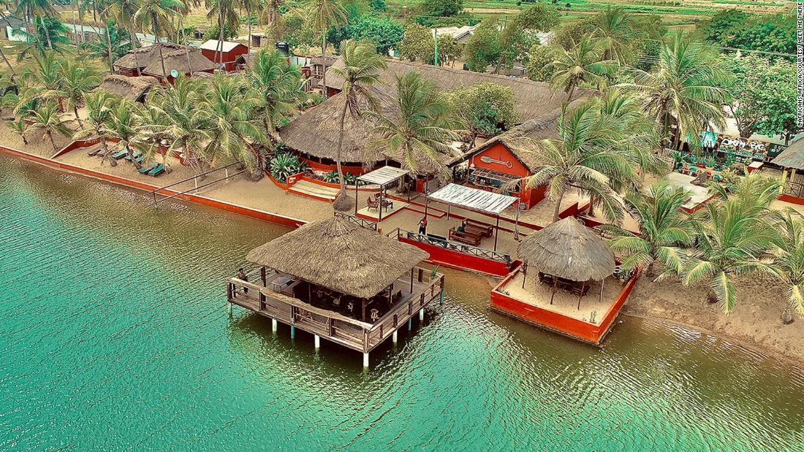
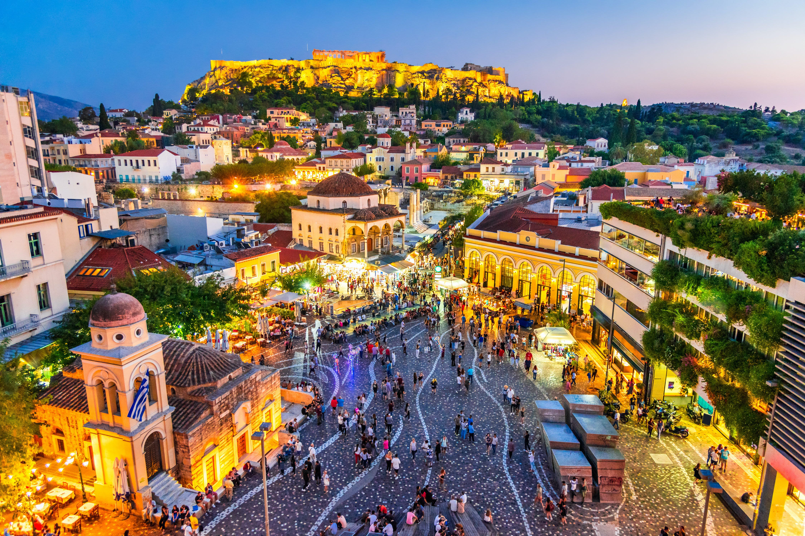
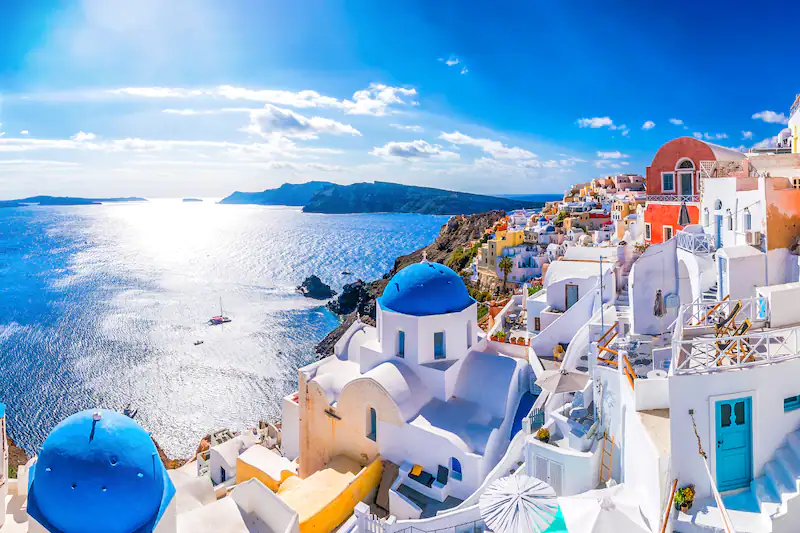
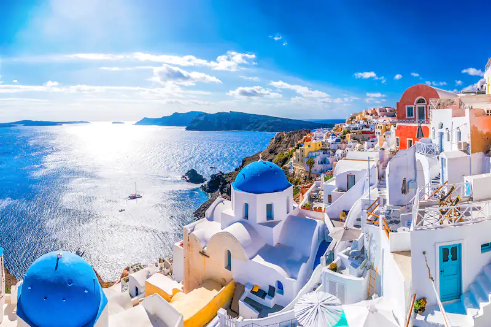

Ghana
So in Ghana there are two places that are in the Volta Region that I would like to visit and below are the places
- Akosombo
Akosombo is a small town in the Volta Region of Ghana and has a rich culture, torist destination and fine beach resort. One of the place i find interesting and would like to visit is the
Bridge View Resort Arriving at BridgeView is like discovering a dreamy escape. Delicately hemmed in by the verdant Akosombo mountains and surrounded by the expanse of one of the largest man-made lakes in the world; Lake Volta. A world away from the bustling streets of Ghana’s urban cities, BridgeView effortlessly blends into the tranquility of natureBelow are images from Bridge View Resort
For more information click here
- Keta
Keta is the coastal town in the Volta Region of Ghana. It is the capital of the Keta Muncipal Distrist. The place that I would like to visit in Keta is Meet me There Meet me there sits between the villages of Dzita-Abledomi on the stunning coast of the Volta Region
Below are images of Meet me There
For more information click here
England
In England there are also two places that I would like to visit, Below are the places
- Trafalgar Square
Trafalgar Square is a public square that features some of London’s top attractions, from galleries and historic buildings to statues and monuments. It also plays host to a range of events throughout the year that are supported by the Greater London Authority, who manage the square.
Below are images from Trafalgar Square
For more information click here
- Liverpool
Liverpool Anfield is located about 2 miles north of Liverpool city centre in the middle of the Anfield area. Just half a mile away, separated by Stanley Park, lies Goodison Park, home of Liverpool rivals Everton.
Below are images of Liverpool
For more information click here
Greece
In Greece there are also two places that I would like to visit, Below are the places
- Athens
Athens is the capital of Greece. It was also at the heart of Ancient Greece, a powerful civilization and empire. The city is still dominated by 5th-century BC landmarks, including the Acropolis, a hilltop citadel topped with ancient buildings like the colonnaded Parthenon temple
Below are images from Athens
For more information click here
- Santorini
Santorini is one of the Cyclades islands in the Aegean Sea. It was devastated by a volcanic eruption in the 16th century BC, forever shaping its rugged landscape. The whitewashed, cubiform houses of its 2 principal towns, Fira and Oia, cling to cliffs above an underwater caldera (crater)
Below are images from Santorini
 

For more information click here